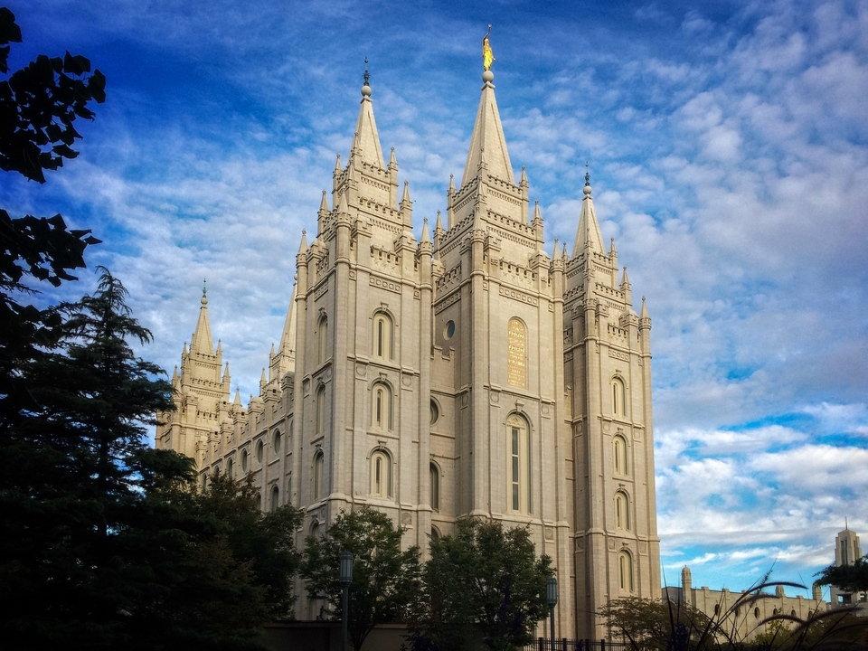

Lagos, Nigeria Temple

About the Temple
The Lagos Nigeria Temple was announced by the First Presidency on April 6, 2013. It serves members of The Church of Jesus Christ of Latter-day Saints in Nigeria.
Dedicated: August 7, 2005 by Gordon B. Hinckley.
Visiting Information
- Address: 2 Mobolaji Bank Anthony Way, Ikeja, Lagos, Nigeria
- Phone: +234 1 270 0000
- Temple President: Elder David A. Bednar
- Temple President's Wife: Sister Susan K. Bednar